December 3, 2005: Opera House, Toronto
Click on thumbnails for larger version.
Please contact Janet to submit pictures or to request originals.
Opera House - The Out Crowd
| 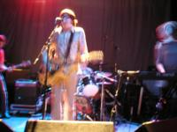 Matt performing. |
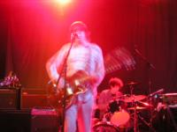 Matt performing. |
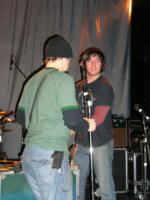 The cute guy in the Out Crowd packing up after the set. |
Opera House - The Dandy Warhols
| 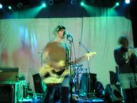 Courtney performing. |
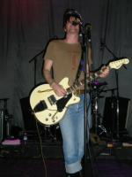 Courtney performing. |
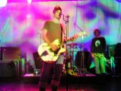 Courtney performing. |
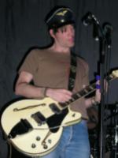 Courtney performing. |
| 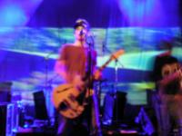 Courtney performing. |
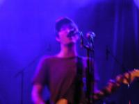 Courtney performing. |
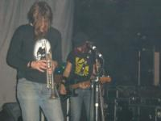 The really, really stoned trumpet player with Pete in the background. |
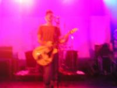 Courtney performing. |
Opera House - After the show
| 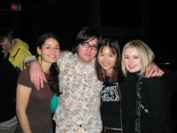 Kerrie, Matt, Janet, Nikki; on the main floor right after the drunk Irish guy harrassed us and right before we were taken backstage. |
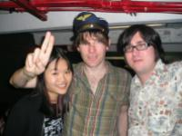 Janet, Courtney, Matt; in the basement of the Opera House. |
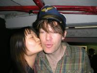 Janet happy, Courtney cooperative; in the basement of the Opera House. |
Drake Hotel Lounge
| 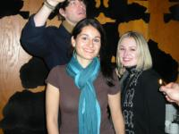 Courtney doing something, Kerrie, Nikki, a band member trying to give us light for the picture. |
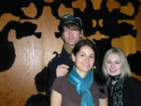 Courtney, Kerrie, Nikki. |
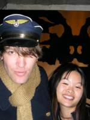 Courtney, Janet. |
What happened
Before the show, I sell the ticket to someone outside at face value even though he offers me more, and I can't get it out of my little superstitious head that the evening wouldn't have happened otherwise.
I arrive late, alone, and sad, but even after checking my coat, the front area by the stage is completely empty except for a group of four people off to the side. So I walk up and secure my spot right in front of center stage. During the show, I meet two girls who stand beside me at the front.
After the show, Matt Hollywood (lead singer of the opening band) is on the floor so we start talking to him. Then, this 50-yr-old really drunk Irish guy starts trying to hit on us. The two girls manage to avoid him and continue talking to Matt, but this guy starts pulling on my arm and asking me to hear him out about something. I go over to Matt and whisper to him that I'm being bothered by the creep, so Matt says easily "Oh, well why don't I take you all backstage."
Matt, the two girls, and I walk past the security guy and down a flight of bad stairs into a small smoky room in the basement. There are two couches and a catering table, and the two bands and some crew members and a few other people are there. Courtney is on the far side of the room, and after a few minutes of eating something, comes over and talks to us. I look him in the eyes and I tell him that although I'm in engineering school and am surrounded by guys (Courtney nods and adds: "white guys") all day, in my mind, he is the sexiest man alive, right next to John Lennon, because of his style, musical talent, and whole image. He smiles warmly and seems really touched and says "aww... thanks sweetheart". He calls me sweetheart a couple more times before asking my name. I should mention that although he seemed really stoned when he was on stage, during all of this, he is looking directly into my eyes and listening to what I'm saying with interest. I'm pretty nervous and am unable to stare at him while we all talk (it's now me, the two girls, Courtney, and Matt) but I notice from the corners of my eyes that he is glancing at me, which is the absolute highlight of the night.
We talk some more. He talks about how fame sucks "because you're constantly surrounded by assholes" and "you make one hit and you have to work so hard to keep it going", and everyone hates them in Portland, where they are accused of not being indie anymore and selling out. He mimics in a gruff meathead voice the jocks that approach him and say "Hey! Your band sucks! Yeah! So... what do you think of that, huh?" He shows off his leather boots that he designed and disagrees that they are too expensive for the average person ("they're only 350$"). I tell him his androgynous style is really hot and he grins "Ah, you like the stewardess get-up..." (he is referring to a picture in the booklet of the Odditorium CD.) He says he tries to set himself apart, and that tonight, he has the whole fascist thing going on. He playfully salutes and I tell him he just looks like a socialist hippie who is protesting war by dressing up to go to war and it makes no sense, and he smiles at this.
Courtney says the after party is at the Mod Club where "they have drugs waiting for us there" and shows us the marijuana he's smoking and even offers to share some with us when we get there. He starts to arrange rides to go to the club (someone suggests taking the tour bus but Courtney wants to get a limo service) and he actually counts me and the two girls in, BUT I have a car and the girls and I don't have our coats yet because the coatcheck lineup is still very long. The girls and I clearly won't be able to get in if we aren't with the band, so the slim chance we have is to grab our coats as soon as we can, and get to the club before them. We're to wait for them at the front and when they arrive, they'll take us in with them. However, coatcheck lineup is really very long and at this point, we agree odds aren't good.
After waiting a LONG time to get our coats, the girls and I take my car and get to the club. There is indeed a big lineup and I need a place to park, so I tell one of the girls with a cellphone to get out and wait at the front while the other girl and I find a place to park, after which we'll walk over. She gets out and I start cruising in the streets and we give her a call and she says that the band just left the club; Courtney thought it was too loud and they want to go somewhere else. So I quickly drive back to the club, and it turns out that their tour bus has left (the driver assumed the band was going to be at the club for a while,) so they are all taking cabs to the next venue at the Drake Hotel Lounge. For whatever reason, Courtney and Matt are without a cab, so they get a ride in my car. Courtney sits in the front, and Matt sits in the back in between the two girls. I have a Dandys cd (13 Tales) in the cd player, and Courtney actually skips the cd to his favourite songs (which are the "less produced" songs, like Country Leaver.)
I drive to the Drake Hotel, during which Courtney and I chat about lots of stuff. He talks about how "Canadia" is really weird (with similar insanely long coatchecks and terrible traffic that takes an hour to get anywhere, which was exactly the case in Montreal where they played the night before), and even a bit about Asian women. He says: "I've never hooked up with an asian girl before but I've always wanted to, I just never got the chance. When I was younger, I was really into the whole 'chinophilia'. The thing is Asian women have virtually no hair on their bodies, which is every jerkoff scenario..."
So we get to the Drake Hotel and we all go inside and it's really unorganized because there's a wedding going on at the same time. Apparently, the DJ had advertised the Dandys after party but never actually told anyone at the hotel about it, and last call at the bar is made right when we walk in. Courtney laments about how he just wants to find "a late-night bar where we can drink, do a few coke buds in the bathroom (he gets kind of playful saying this), smoke some grass outside in the back, get some wings, you know, stuff like that."
So at this point, nothing much is happening, and everyone's kind of tired. The other two girls have to leave soon because of work the next day, so I tell Courtney that "three girls are interesting, but it'd be boring if only I stayed" and he says he understands. The conversation then goes something like this:
Janet: "Thank you so much for giving us such an amazing evening. I really respect everything you do, and they write so much about you."
Courtney: "Well, they write a lot of bad stuff too."
Janet: "But they're journalists. They're only there to promote themselves."
Courtney agrees: "that's why they're journalists, they're not real writers."
Janet: "Well you know what Andy Warhol said: 'Don't read what they write about you, just measure it in inches.'"
Courtney smiles.
Janet continues:"What he did was give every magazine a different answer to the same questions, so when someone came up to him and said 'hey I hear your favourite city is Barcelona', he would know exactly what magazines they read."
Courtney looks a bit sheepish: "But I don't have that great of a memory."
Janet: "It doesn't matter, the point is to fuck around with the media. Play games with them. Run them around."
Courtney smiles.
Janet: "I still think you're amazing, and I'm not using you for your fame -"
Courtney: "I like that. Not using me."
Janet: "I mean it. Do you believe me?"
Courtney looks into my eyes for a full second and says solemnly: "Yes."
I say my thank-you's again and I give him (another) kiss on the cheek (it's my third to him that evening.)
I go to Matt, and he talks about how he's sober now and just wants to go back to his hotel and go to bed. I tell him that the other two girls are leaving and I wouldn't be as interesting on my own. He starts hinting that he'd like it if I stay, but I tell him I can see where it would be going and I'm not prepared for it. I kiss him on the cheek and give him a big hug, and the girls and I go on our way.
{kind=link}
{kind=link}
{kind=link}
{kind=link}
{kind=link}
{kind=link}
{kind=link}
{kind=link}
{kind=link}
{kind=link}
{kind=link}
{kind=link}
{kind=link}
{kind=link}
{kind=link}
{kind=link}
{kind=link}